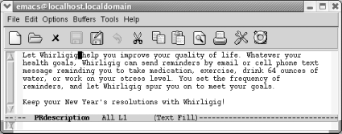
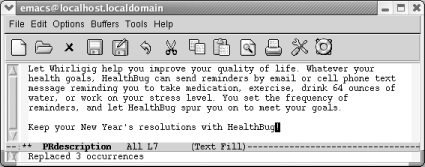
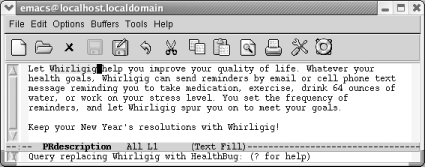
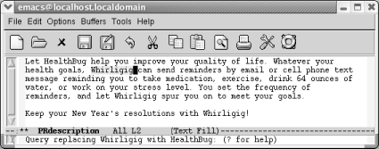
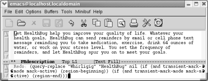
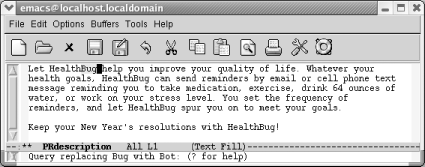
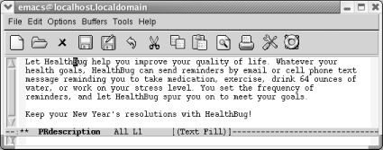
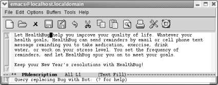

3.2. 查找替换
查找和替换总是相辅相生的，就像咖啡与牛奶。假设你在开发一款新的软件，而市场部在最后时刻决定修改产品名称。
生命周期信息发布是一个邮件服务，它会定期提醒你改善生活习惯，例如锻炼，喝水，以及摄取维生素。市场部提出，烦恼或者鼓励级别可以由用 户自行设定。生命周期并不能说是最恰当的名字，所以最后市场部提出要改成健康隐患。
3.2.1 简单查询和替换操作
假设你正处于我们刚刚描述的场景中，需要将一个字符串全部替换为另一个。你已经确定要替换全文中的单词生命周期（Whirligig）.你可以使用 一个简单指令让Emacs替换每一个给定的字符串。输入 M-x replace-string Enter ,然后输入查询字符串，按 Enter .现在输入替换字符串并 再次按 Enter 。Emacs会替换掉从光标开始到文件末尾的全部字符串。如果想替换掉全文中的字符串，先按 M-< 回到文章开头，再输入指令。 下面是一个使用 replace-string 的简单例子。
| 初始状态： |
|---|
|  |
| Whirligig 出现了四次，但是光标在第一个匹配项之后。 |
现在开始执行替换操作。
| 输入： M-x replace-string Enter Whirligig Enter HealthBug Enter |
|---|
|  |
| Emacs替换掉光标之后出现的全部实例。 |
替换操作只从光标位置向下执行；第一句中的 Whirligig 还没有被替换。我们一会儿会再次处理这个例子。
3.2.2 询问替换
只有少数的查找替换情况像我们刚才描述的那样简单直接。通常情况下，你并不确定替换掉每个查找到的字符串：全局替换可能导致不可预期的后 果。如果你想一个一个的决定是否要替换字符串，可以使用询问替换，它可以让你有条件的替换文件中的字符串。当Emacs查找到一个查询字符串 的匹配项后，它会询问是否需要替换，然后你相应的做出操作。
To use query-replace, go to the beginning of the buffer using M-< and then type M-%. The prompt Query replace: appears in the minibuffer. Type the search string and press Enter. Now this appears:
要使用询问替换，先使用 M-< 跳到缓冲区开头，然后输入 M-% 。提示信息 Query replace: 出现的迷你缓冲区。输入查询字符串再按 Enter 。现在又提示：
Query replace searchstring with:
输入替换字符串再按 Enter 。目前为止，这个操作过程与替换字符几乎完全相同；只是提示信息不同。
Emacs现在查找第一个查询字符串。当找到一个匹配项，新的提示信息出现：
Query replacing searchstring with newstring
Before performing the replacement, Emacs waits for a response to tell it what to do. Table 3-3 lists the possible responses and their results.
在执行替换操作前，Emacs会一直等待回复，来告诉它下一步执行什么操作。表3－3可用的回复和相应的执行结果。
表3－3.询问替换过程中的回复
| 按键 | 行为 |
|---|---|
| Space 或 y | 用新字符串替换查询字符串并移动到下一匹配项。 |
| Del 或 n | 不替换并移动到下一匹配项。 |
| . | 替换当前实例并退出。 |
| ， | 替换当前匹配项并查看替换后效果。（按 Space 或 y 来向前移动）。 |
| ! | 替换剩下的全部匹配项且不再询问执行什么操作。 |
| ^ | 跳回到前一匹配项。 |
| Enter or q | 退出询问替换。 |
| E | 修改替换字符串。 |
| C-r | 进入递归编辑状态（在后面会有详细介绍） |
| C-w | 删除当前匹配项并进入递归编辑状态（你就可以进行自定义替换了） |
| C-M-c | 退出递归编辑状态，继续询问替换。 |
| C-] | 退出递归编辑并退出询问替换。 |
这个表罗列出很多快捷键要记，但是你可以少记两三个。大部分时候，你只要按 Space 来响应提示信息，告诉Emacs执行替换操作并跳到下一个 实例，或者 n 跳过当前替换并跳到下一实例。如果你不太确定会发生什么，输入一个逗号（，）；Emacs执行替换但不会跳到下一实例直到你按 Space 。在执行了一些替换之后，你发现不需要分别检查每一个修改。输入感叹号（！）让Emacs执行余下的替换工作，并不再询问你是否替换。 如果记住这几个快捷键，你也基本就准备好了。
询问替换在实际操作中怎么用呢？让我们再看下之前的例子，假设我们想把 Whirligig 全部替换为 HealthBug （之前做的替换字符串操作并没有保存 修改）。
| 输入：M-< M-% Whirligig Enter HealthBug Enter |
|---|
|  |
| 已经准备好替换第一个匹配项；按 Space 继续 |
| 按： Space |
|---|
|  |
| 当你按了 Space ,Emacs替换掉第一个匹配项，然后询问替换操作移动到第二个匹配项上。 |
在达到文件结尾前，这个操作会一直重复执行。如前所说，输入 ! 替换文件中其他匹配项。
在表3－3中，你或许已经注意到一些按键（如 Space ）在执行替换操作时具有特定的含义。尽管在书面上看这些操作让人觉得有些诡异，实际 上，使用这些按键执行不同的操作并不混乱。你或许在一个练习文件中尝试询问查询操作来掌握不同的操作。如果觉得有趣，你可以打开Emacs的 FAQ，把它保存为另外的文件，然后替换文件中全部 Emacs 。
3.2.3 重复执行询问替换（以及其他复杂指令）
已经学习了基本的询问替换，现在来介绍一些快捷键，他们不仅可以用于询问查询也可以用于Emacs中的其他地方：用简单的修改来重复执行复杂指 令。我们可能不小心退出了询问替换操作或者执行的替换操作与我们实际想要的替换有些微差别。难道我们还要一个字母一个字母重新输入？不。 只要移动到文件开头，按 C-x Esc Esc 。最后一次输入的复杂指令会出现。如果不是你想要的指令，按 M-p 查看前一个指令（必要的话可以 重复执行该操作； M-n 显示后一个指令）。例如，跳到文件开头并重复执行刚才做的询问替换操作。
Type: M-< followed by C-x Esc Esc
| 输入： M-< 再输入 C-x Esc Esc |
|---|
|  |
| Emacs在迷你缓冲区显示最近一个复杂指令；事实上指令看上去比我们记忆中的显得更复杂一些。 |
当我们按 M-< ，光标移动到文件开头；当按 C-x Esc Esc , 最近一个复杂指令显示出来。Emacs用暗语通知自己，但是我们仍能看到我们想 要的指令。
显示的指令是正确的，所以我们就不用按 M-p 来查看前一个指令。如果必要的话，在按 Enter 之前，我们可以修改询问替换操作的字符串。 在这个例子中，市场部还要将HealthBug（因为bug也可以被解释为害虫）替换为HealthBot（相对而言，我们的感觉中更容易接受一些）。我们之前 的询问替换将Whirligig替换为HealthBug。我们需要修改这个指令，可以把Bug改为Bot。
| 在迷你缓冲区中，修改 Whirligig 为 Bug ，修改 HealthBug 为 Bot 再按 Enter. |
|---|
|  |
| 按 Enter 重新执行指令，用修改过的字符串替换修改过的查找项。 |
如我们刚才所提到的， C-x Esc Esc 可以操作任何在迷你缓冲区输入过的指令，而不仅仅是询问替换操作。但是我们主要还是在查询替换这个 操作中使用该功能。不过它也适用于键盘宏（见第6章）。
3.2.4 递归编辑
当你执行询问替换时，不可避免的，你会碰到其他一些想要修改的内容。试几次－－你就知道我们的意思了！我们一般会在执行完操作前先努力记 住问题，然后，由于忘记了具体问题或位置而沮丧。
幸运的是，Emacs提供一个比较简单的方式。它允许你在执行询问替换的过程中启动递归编辑。启动递归编辑后，你可以先挂起询问替换操作，再 执行你的编辑工作。当你退出递归编辑后，询问替换回到你刚刚操作的位置。
要想在询问替换时启动递归编辑，按 C-r 。（值得注意的是，和其他快捷键绑定一样， C-r 在询问替换操作和通常状态下的Emacs中有不同的 含义）。 当启动一个递归编辑，方括号（［］）会出现在模式行。让我们再次回到之前的例子中。你已经使用询问替换来查找第一个BUG，并将其 替换为Bot，你得按空格来处理时，你突然想起律师说的“64盎司的水”这个精辟并且可以作为医疗建议的句子时，递归编辑将派上用场了。
| 输入： C-r |
|---|
|  |
| 注意（Text Fill）两边的方括号，表明正处于递归编辑状态。 |
现在你可以随便编辑了；和在一般编辑状态下没有什么区别。移动到第三行并删除"64 ounces of." 如果想回到询问替换，按 C-M-c 。这个命令 告诉Emacs退出递归编辑并激活询问替换。Emacs将光标退回到启动递归编辑时的位置。你就可以像什么事儿都没有发生一样继续替换操作了。
Delete "64 ounces of," then type C-M-c
| 删除 “64 ounces of,”然后按 C-M-c |
|---|
|  |
| Emacs退回到询问替换，并且按空格来修正下一个BUG |
如果你想一下就退出递归编辑并退出询问替换，你可以按 C-] （表示 abort-recursive-edit）或者输入 M-x top-level Enter 而不是 C-M-c 。
事实上，你不仅可以在询问替换时启动递归编辑，其他任何时都可以。指令 M-x recursive-edit Enter 可以进行递归编辑； C-M-c 让你退 出递归编辑，并回到之前的编辑状态。甚至可以在递归编辑状态下再次进入递归编辑，尽管这样做会不断增加迷惑性。
3.2.5 Are Emacs Searches Case-Sensitive?
By default, Emacs searches are not case-sensitive. Look at the Options menu and you'll see that the option Case-Insensitive Search is the only option that is checked by default.
What does this mean in practical terms? If you search for the word random, the search finds random, Random, and RANDOM, as well as oddities like RanDoM and rANdOM. When doing replacements, Emacs pays attention to the form of the word being replaced and replaces it with the same case. If you replaced random with tandem, Random would be replaced with Tandem, and RANDOM would be replaced with TANDEM. If you mix capitalization, the replacement string appears just as you type it. healthbug would be replaced with HealthBug if that was the case in the replacement string. In other words, the default search and replacement operations usually do what you want: they find a search string regardless of its case and adjust the replacement appropriately for its context. However, sometimes you need finer control.
The variable case-fold-search determines whether searches are case-sensitive. It applies to all searches: incremental searches, word searches, searches within search-and-replace operations, and so on. By default, case-fold-search is set to t, which means "ignore case unless the user types in mixed or uppercase." This sensible default is usually just what you want. But if you need case-sensitive searches, the Case-Insensitive Search option on the Options menu provides an easy way to experiment with this variable.
Likewise, if you don't want Emacs to adjust the case of your replacement strings, you can set the variable case-replace. Again, its value is t (for "true") by default, which means "adjust the case of a replacement string to match the original text"鈥攖hat is, capitalize the replacement if the original word was capitalized and so on. Setting this variable to nil means "never adjust the case of the replacement string; always put it in exactly as I typed it." To change the value of case-replace, type M-x set-variable Enter case-replace Enter nil Enter (there's no menu option for this variable).
Both the menu option and the set-variable command change the behavior of Emacs only temporarily. If you start a new editing session, you'll be back to the default behavior. This is probably what you want, because searching separately for capitalized and lowercase words is inconvenient.
You can set the value for the Case-Insensitive Search option permanently by selecting Save Options from the Options menu or by adding this line to your .emacs file:
(setq-default case-fold-search nil) ; require exact matches
To set case-replace permanently, add the following line to your .emacs file. You'll need to restart Emacs to have the change take effect.
(setq-default case-replace nil) ; never change case when replacing
You could change these variables through Emacs's interactive customization facility, Custom, instead (see Chapter 10). 3.2.6 Regular Expressions for Search and Replacement Operations
Sometimes none of the simpler searches described in this chapter are adequate. Regular expressions allow you to build searches with strings that contain various wildcards.
Table 3-4 shows some of the characters you can use in creating a regular expression.
Table 3-4. Characters for creating regular expressions
Character(s)
Match
^
Matches the beginning of a line.
$
Matches the end of a line.
.
Matches any single character (like ? in filenames).
.*
Matches any group of zero or more characters (. matches any character and * matches zero or more of the previous character).
\<
Matches the beginning of a word.
\>
Matches the end of a word.
[]
Matches any character specified within the brackets; for example, [a-z] matches any alphabetic character.
\s, \S
Matches any whitespace character: space, a newline, a tab, a carriage return, a formfeed, or a backspace; \S matches any character except whitespace.
\d, \D
Matches any single digit, 0-9; \D matches any character but a digit.
\w, \W
Matches any "word" character (upper- and lowercase letters, digits, and the underscore character); \W matches any character but these.
If you do a regular expression search for word$, you would find instances of word on a line by itself. The ^ says that the w must be the first character on the line, the $ says that the d must be the last character.
If you wanted to find all words starting with beg and ending with the letter s, you could use beg[a-z]*s as your regular expression. This would find the words begins, begets, and begonias, in addition to really odd words like shibegrees and altbegaslia. If you don't want these mutants鈥攖hat is, if you really want words that begin with beg and end with s, use \<beg[a-z]*s\>. The \< is a special sequence that matches the beginning of a word; \> matches the end of a word. If you wanted to find the words beg, big, and bag; but not begonias, and certainly not any strange words with beg on the inside, you would use \<b[a-z]g\> as the regular expression.
To search for a ^, $, ., *, [, ], or any number of other special characters, you obviously can't use the character itself. Put a backslash (\) first鈥攊.e., to search for a period, search for \. For example, to search for the electronic mail address`:
howie@mcds.com
the regular expression would be:
howie@mcds\.com
This is a barebones introduction to regular expressions; see Chapter 11 for more details and Mastering Regular Expressions by Jeffrey Friedl (O'Reilly) for a book-length treatment of this topic.
You can use regular expressions in incremental searches and in query-replace. Table 3-5 lists the commands you use for regular expression searches. Although they are initiated with slightly different commands, the searches are the same as those described earlier in this chapter.
Table 3-5. Regular expression search commands
Keystrokes
Command name
Action
C-M-s EnterEdit Search Regexp Forward
re-search-forward
Search for a regular expression forward.
C-M-r EnterEdit Search Regexp Backwards
re-search-backward
Search for a regular expression backward.
C-M-sEdit Search Incremental Search Forward Regexp
isearch-forward-regexp
Search incrementally forward for a regular expression.
C-M-rEdit Search Incremental Search Backward Regexp
isearch-backward-regexp
Search incrementally backward for a regular expression.
C-M-%Edit Replace Replace Regexp
query-replace-regexp
Query-replace a regular expression.
(none)
replace-regexp
Globally replace a regular expression unconditionally (use with caution).
Date: 2011-02-16 21:25:04 CST
HTML generated by org-mode 7.4 in emacs 23